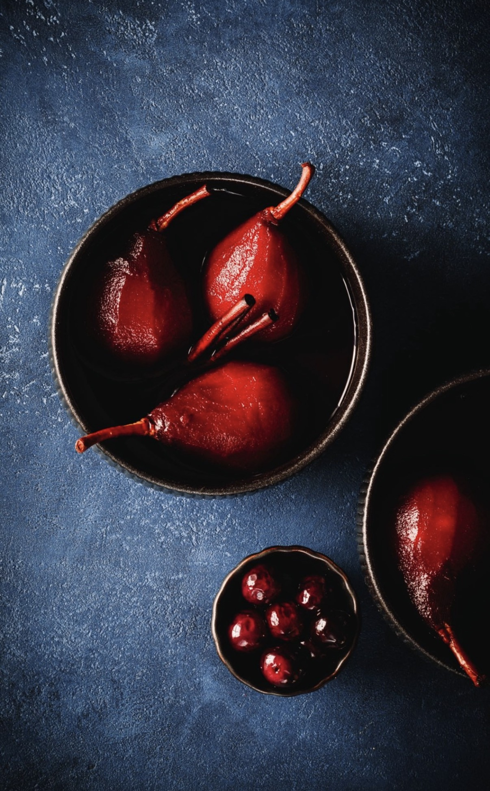

Ernährung wirkt auf drei Ebenen. Sie gehören zusammen.
Die Entscheidungen, die wir bei unserer Ernährung treffen, beeinflussen unser Energieniveau, unterstützen die Funktion lebenswichtiger Organe und tragen zur Widerstandsfähigkeit unseres Immunsystems bei.
Der Einfluss der Ernährung reicht über den Körper hinaus. Eine nährstoffreiche Ernährung ist ein wichtiger Faktor für Konzentrationsfähigkeit, Aufmerksamkeit und ein gutes Erinnerungsvermögen.
Eine nährstoffreiche Ernährung spielt eine wichtige Rolle für unsere Stimmung, fördert die Widerstandsfähigkeit gegenüber den Belastungen des Lebens und trägt zu einem allgemeinen Wohlbefinden bei.